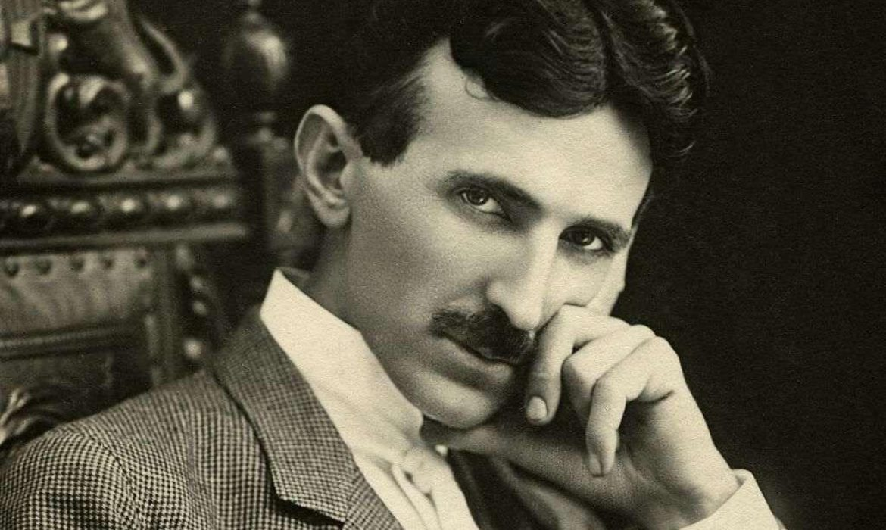

"The present is theirs, but the future, for which I have really worked, is mine."

Biography
Nikola Tesla, a Serbian-American inventor and electrical engineer, is renowned for his groundbreaking contributions to the development of alternating current (AC) electrical systems. Born on July 10, 1856, in what is now Croatia, Tesla's prolific career included work on numerous electrical innovations, such as the Tesla coil and the induction motor. His collaborations with George Westinghouse played a pivotal role in the "War of Currents," ultimately establishing AC as the dominant electrical system. Tesla's inventive spirit extended to wireless communication and energy transmission, showcasing his far-reaching vision. Despite facing financial challenges and some periods of obscurity, Tesla's legacy endures as a symbol of scientific brilliance and imaginative thinking. His impact on the field of electrical engineering is immeasurable, and his ideas continue to influence technological advancements to this day.